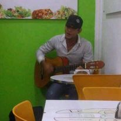
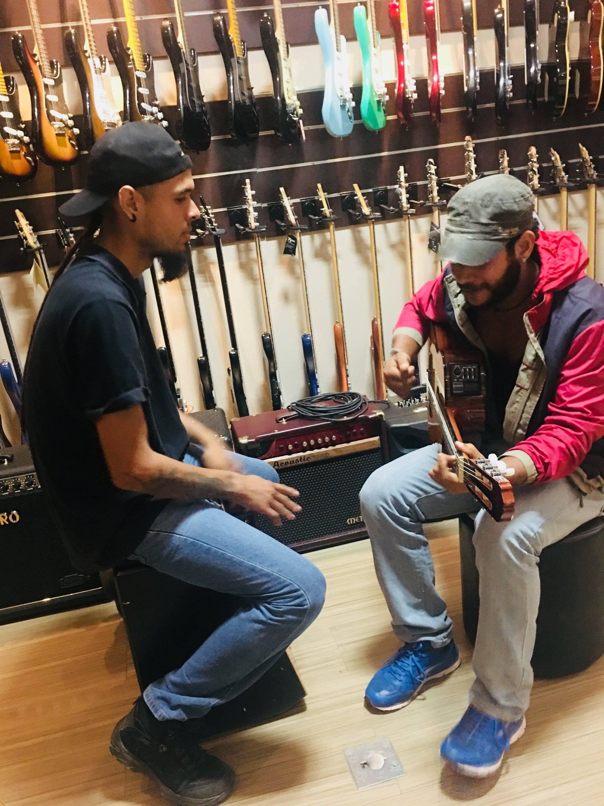
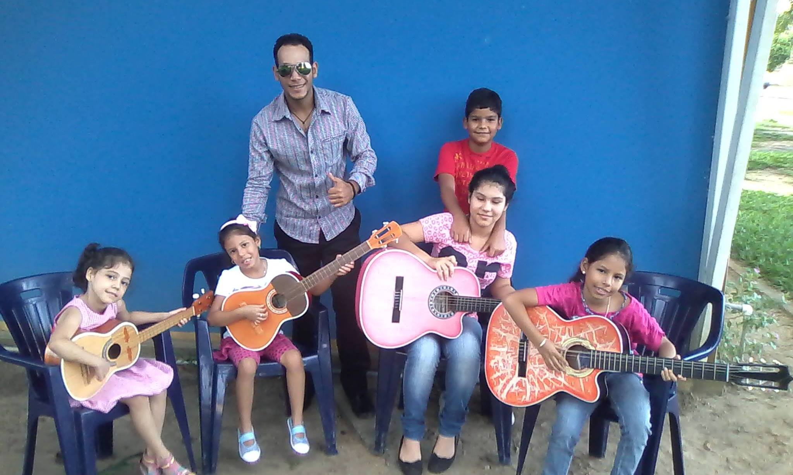
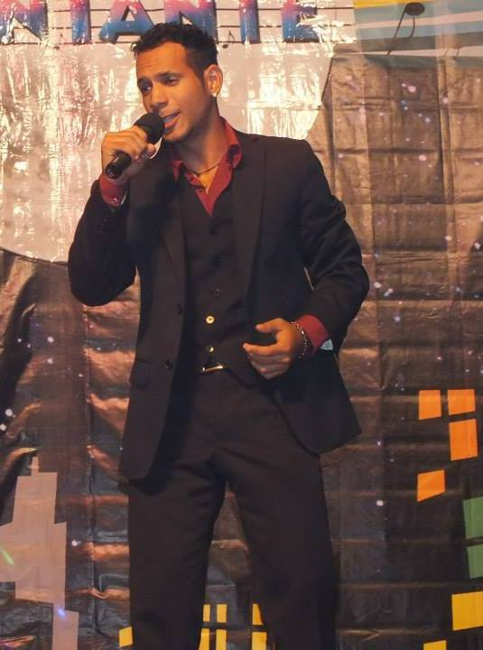
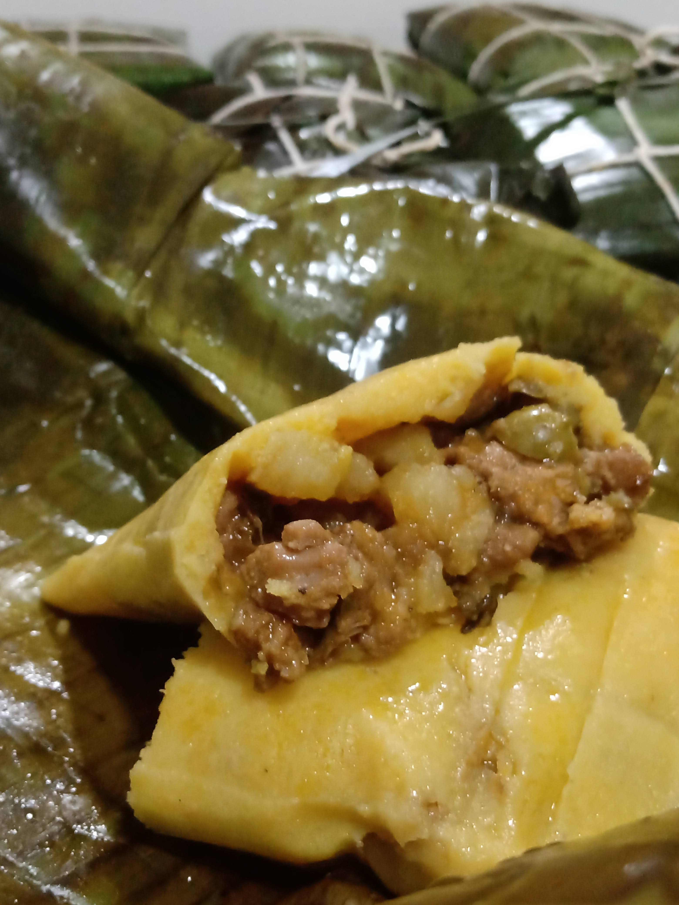
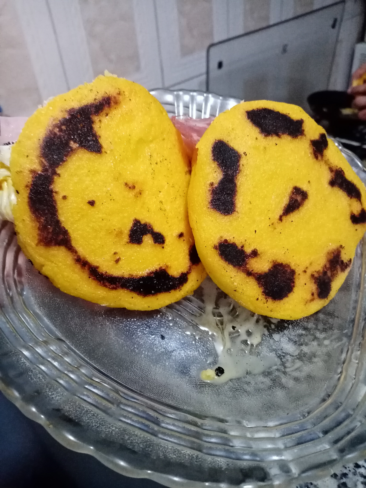
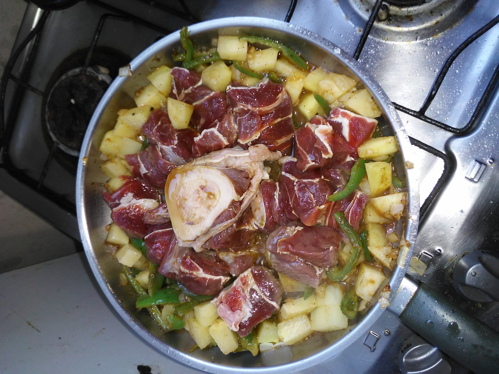
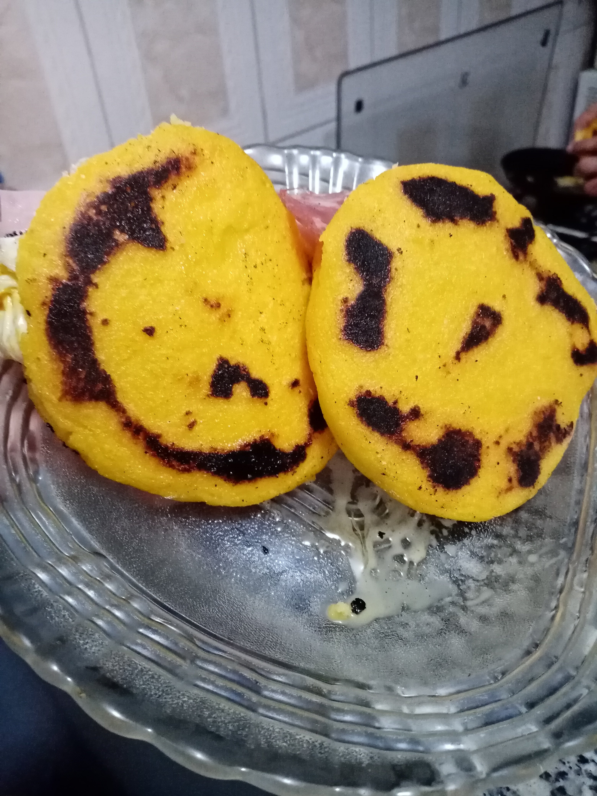
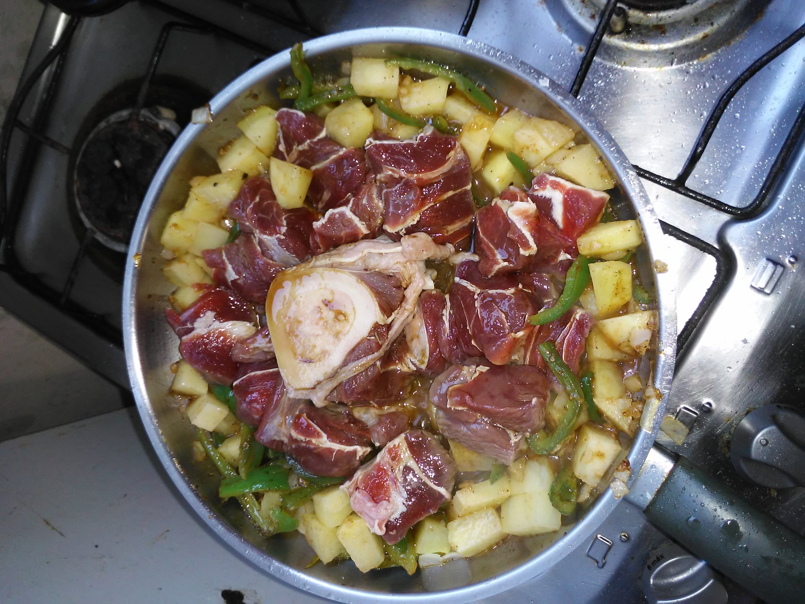

Luis G. Mendez M.
Estudante Front End Developer
A Minha Historia
Olá, eu sou Luis Mendez
Sou de Delta Amacuro ,um estado da Venezuela, um Estado muito lindo e de pessoas humildes e gentis. Ha 4 anos que vim embora para o Brasil, para poder obter uma melhora de vida e evoluir pessoalmente, foi um reto e foi muito dificil ter que sair da minha terra, mas a vida é isso (retos e constante evolução). Assim cheguei na fronteira Brasil/Venezuela em Roraima, andei varios Estados do norte de Brasil até chegar no rio de janeiro a onde moro atualmente, e depois de muitos trabalhos e servicios achei a oportunidade para me profissionalizar como Programador Front-end na TOTI embora que eu nunca me familiarizei com esta area, estou gostando muito tanto do conhecimento adquirido como os desafios que estou me encontrando na formatura, esperando com ansias trabalhar neste novo e magnifico mundo.
Formação
2004-2009
Bacherelato em ciencias socias
Liceo Bolivariano 'Jose Antonio Paez'
2022-cursando
Front-end
Instituto TOTI - diversidade
Experiencia
2016-2020
Personal Trainer
Autonomo
2015-2018
Professorde Musica (Violão, e instrumentos típicos da Venezuela)
Prefeitura de Tucupita - Divisão de Cultura
2019-2022
Churrasqueiro Chefe
Churrasqueira Rio
Hobbie
-
Eu e o meu Violão
Foi quando tinha 15 anos de edade, que o meu irmao me presenteo o meu primeiro violão, naquela epoca eu tinha disfemia (tartamudo), uma alteracão da comunicação que afecta a fluides na fala, lembro que não foi facil nessa edade ter essa discapacidade,e emquanto eu fui aprendendo musica eu fui me curando daquele trastorno, por isso tenho dedicado parte da minha vida a musica, porque a musica do jeito que me curou, pode curar ao mundo todo.
    -
Cozinhando amor
Minha paxião pela cozinha nacio no meu lar, na admirção que eu tenho quando veio a minha mae cozinhando dia a dia nossas comidas, com amor y gosto para alegrar nossos dias.!
 



Reporitories
Contato
Quer entrar em contato comigo?
Preencha o formulário ao lado e entrarei em contato o mais rápido possível.
Você também pode me encontrar nas seguintes redes sociais: